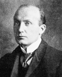
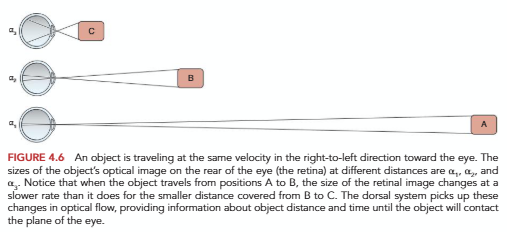
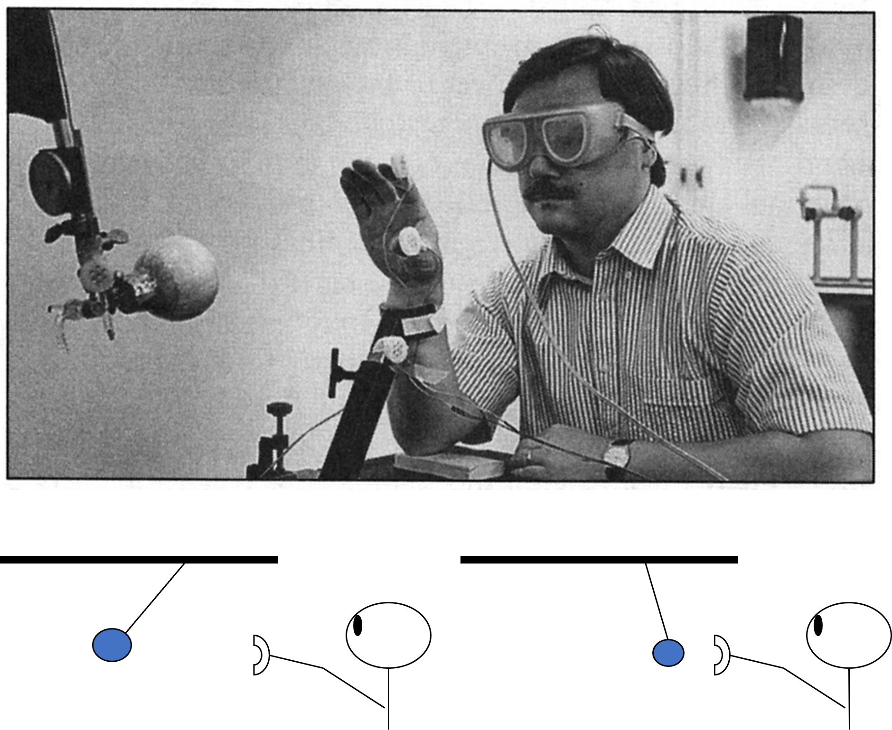

Vision Guiding Action in Real Time
This lesson is about vision as live, closed-loop control — steering, correcting, and timing a movement as it unfolds, in milliseconds.
These interactive lessons were built by Dr. Kuznetsov using AI tools, with extensive input from and review by the instructor, who is responsible for their content and accuracy.
Learning objectives
You should be able to:
- 1Define visual feedback processing time and describe Woodworth’s two-component model of goal-directed aiming, connecting it to open- and closed-loop control.
- 2State the approximate time it takes to initiate a visually-based movement correction, and the evidence for it.
- 3Apply the optical variable tau (τ) to explain how we time contact with approaching objects, and contrast it with distance-over-speed estimates.
Correcting a movement in real time
When you reach for a target, vision doesn’t just aim the movement at the start — it corrects it along the way. The central question: how fast can humans correct their movements based on visual feedback? That delay is called visual feedback processing time.
Over a century ago, Woodworth (1899) proposed what we now call the two-component model of goal-directed aiming:

Open-loop initial impulse
A fast, pre-programmed phase that launches the hand roughly toward the target — no feedback used yet.
Closed-loop correction
As the hand nears the target, visual feedback fine-tunes the movement to home in on it.
This is the same open-loop vs. closed-loop distinction from the sensory unit, and the correction phase runs through the comparator: compare where the hand is (from vision) against where it should be, then issue a correction. The two-component idea still anchors modern accounts — now understood as two components but multiple underlying processes (Elliott et al., 2010).
Woodworth, R. S. (1899). The accuracy of voluntary movement. The Psychological Review: Monograph Supplements, 3(3), i–114. · Elliott, D., Hansen, S., Grierson, L. E. M., Lyons, J., Bennett, S. J., & Hayes, S. J. (2010). Goal-directed aiming: two components but multiple processes. Psychological Bulletin, 136(6), 1023–1044.
How fast is the visual processing time?
The cleanest way to measure visual feedback processing time is to move the target mid-reach and see how quickly the hand changes course. Brenner & Smeets (1997) did exactly this: participants reached for a target that jumped to a new position during the movement.
Press Start, move onto the dashed start circle (left), then reach to the gold target as fast and accurately as you can. Most reaches are straightforward — but on about one in three, the target suddenly jumps up or down and you must redirect. Because you can’t predict which, do several reaches in a row: the surprise is the whole point. When a jump happens, the app times how long after it your path turns toward the new location.
Got a feel for your own correction time? Once you’ve done a few jump trials, flip the box below to compare your experience with what the studies found.
Brenner, E., & Smeets, J. B. J. (1997). Fast responses of the human hand to changes in target position. Journal of Motor Behavior, 29(4), 297–310. · Saunders, J. A., & Knill, D. C. (2003). Humans use continuous visual feedback from the hand to control fast reaching movements. Experimental Brain Research, 152, 341–352. doi:10.1007/s00221-003-1525-2
The expanding retinal image
Correcting a reach is one job; timing contact is another. How do people and animals control their approach and contact — stopping, catching, or ducking at the right instant?
• a person moving toward an object needs to contact or avoid it (braking, stepping), or
• an object moving toward a person must be intercepted (catching a ball).
The key visual signal is retinal image expansion: as an object approaches, the image it casts on the back of your eye (the retina) grows — and, crucially, it grows faster and faster as the object gets closer.

Source: Schmidt, R. A., & Lee, T. D., Motor Learning and Performance (7th ed.), Figure 4.6.
Time-to-contact and tau (τ)
David Lee (1974) showed that time-to-contact is specified by an optical variable called tau (τ): it is the inverse of the rate of retinal-image expansion. Because it’s an inverse, a fast rate gives a small τ, and a slow rate gives a large τ:
Look at each approach, predict what it does to the expansion rate and to τ — then flip the box to check.
Same object, two speeds: the faster it expands, the smaller the τ — and the less time you have. Try it live below.
Interactive: watch τ change with speed
Set an approach speed, then press play. Watch the image expand and the time-to-contact count down — faster approach makes the image balloon late and leaves less time.
you
The system doesn’t need the object’s speed or distance in real units — the rate of optical expansion alone specifies when contact will happen. That’s the power of τ.
Lee, D. N. (1976). A theory of visual control of braking based on information about time-to-collision. Perception, 5(4), 437–459.
Timing a catch
Catching is τ at work. To close your hand at the right instant, you don’t compute the ball’s speed and distance — you read the expansion of its image and time your grasp to the moment of contact. The clip below is a simple illustration of that retinal-image expansion: watch how the ball’s image grows larger as it approaches the camera.
If catching is really controlled by τ, then fooling the optics should fool the catch. How could you test that? One clever study did exactly that — next.
The deflating-ball study
Vision provides the time-to-contact information the motor system uses to initiate and regulate a grasp. Savelsbergh et al. (1991) cleverly tested whether people really use the optical rate of expansion (τ) by fooling the optics.

Predict: if people use τ, what should the deflating ball do to their grasp timing? Flip:
Savelsbergh, G. J. P., Whiting, H. T. A., & Bootsma, R. J. (1991). Grasping tau. Journal of Experimental Psychology: Human Perception and Performance, 17(2), 315–322.
From optic flow and τ to the clinic
Optic flow and τ aren’t just laboratory curiosities — they are the information your future patients use (or fail to use) to move safely. When that information is degraded by aging, disease, or injury, movement breaks down in predictable ways. Here is how the science translates into PT, OT, and PA practice.
For each profession, read the scenario and think about the clinical takeaway — then flip the box to check.
Across PT, OT, and PA, the same principle recurs: movement safety depends on picking up the right optical information at the right time. When expansion/τ information is weak, degraded, or misread, patients mistime actions — and your job is to recognize that, test for it specifically, and retrain or compensate for it.
Putting it together
Across five lessons, vision went from structure to real-time control:
The visual system
Anatomy of the eye, rods vs. cones, and the pathway from retina to cortex.
Eye movements, gaze & expertise
Eye tracking, the types of eye movements, what shapes gaze, and the quiet eye of experts.
Vision, posture & optic flow
Vision dominates balance (moving room); optic flow and steering through the world.
Two visual systems & methods
Perception (ventral) vs. action (dorsal); illusions and occlusion methods to study them.
Vision guiding action in real time
Fast visual corrections (~90–160 ms) and τ for timing contact.
Vision is our preferred source of information for movement — it anchors balance, tells us what and where things are, and guides action moment to moment through a tight perception–action loop.
Your passphrase for this lesson is TAU. Enter it in the Canvas quiz to record completion.